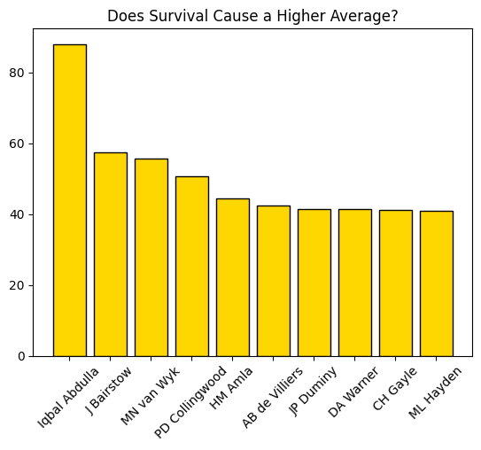
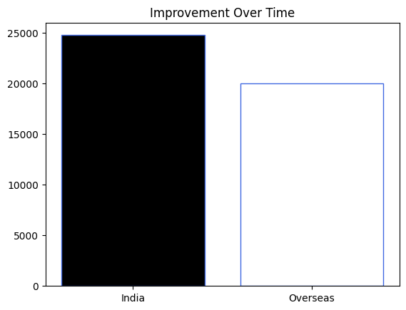
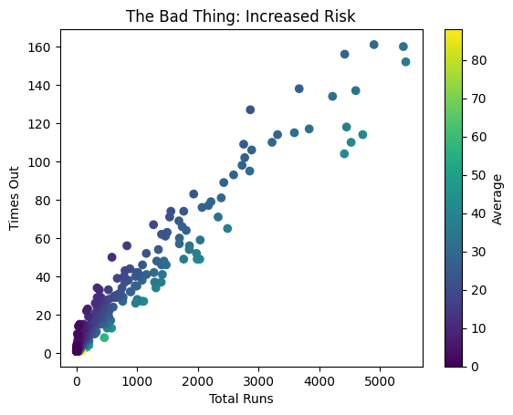

This bar chart ranks the top 10 batsmen by their career average. By examining elite performers like Iqbal Abdulla and J Bairstow, we can analyze the correlation between "survival" at the crease and a high statistical average.

This chart compares the total run accumulation of elite Indian batsmen against overseas players. The data shows that Indian players in this group have collectively amassed nearly 25,000 runs.

This scatter plot visualizes the relationship between total runs and the number of times a player was dismissed. The color gradient represents the batting average, showing that while run accumulation increases, so does the risk of dismissal.